Excercise Solutions
Resources
1-LAS
# Load packages
library(lidR)
library(sf)
library(terra)E1.
What are withheld points? Where are they in our pointcloud?
Code
# According to ASPRS LAS specification http://www.asprs.org/wp-content/uploads/2019/07/LAS_1_4_r15.pdf page 18 "a point # that should not be included in processing (synonymous with Deleted)"
# They are on the edges. It looks like they correspond to a buffer. LAStools makes use of the withheld bit to flag some # points. Without more information on former processing step it is hard to say.E2.
Read the file dropping the withheld points.
Code
las <- readLAS("data/MixedEucaNat_normalized.laz", filter = "-drop_withheld")
plot(las)E3.
The withheld points seem to be legitimate points that we want to keep.
Try to load the file including the withheld points but get rid of the warning (without using suppressWarnings()). Hint: Check available -set_withheld filters in readLAS(filter = "-h")
Code
las <- readLAS("data/MixedEucaNat_normalized.laz", filter = "-set_withheld_flag 0")
plot(las, color = "Withheld_flag")E4.
Load only the ground points and plot the point-cloud coloured by the return number of the point. Do it loading the strict minimal amount of memory (4.7 Mb). Hint: use ?lidR::readLAS and see what select options might help.
Code
las <- readLAS("data/MixedEucaNat_normalized.laz", filter = "-keep_class 2 -set_withheld_flag 0", select = "r")
plot(las, color = "ReturnNumber", legend = T)
format(object.size(las), "Mb")
#> [1] "4.6 Mb"2-ROI
plots <- st_read("data/shapefiles/MixedEucaNatPlot.shp")
#> Reading layer `MixedEucaNatPlot' from data source
#> `E:\Repositories\lidR_repos\lidRtutorial\data\shapefiles\MixedEucaNatPlot.shp'
#> using driver `ESRI Shapefile'
#> Simple feature collection with 5 features and 1 field
#> Geometry type: POINT
#> Dimension: XY
#> Bounding box: xmin: 203879.6 ymin: 7358932 xmax: 203960.6 ymax: 7359033
#> Projected CRS: SIRGAS 2000 / UTM zone 23S
plot(las@header, map = FALSE)
plot(plots, add = TRUE)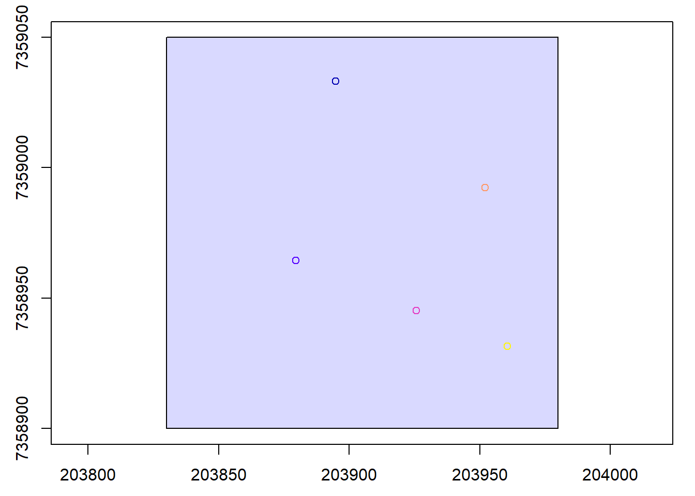
E1.
Clip the 5 plots with a radius of 11.3 m,
Code
inventory <- clip_roi(las, plots, radius = 11.3)
plot(inventory[[2]])E2.
Clip a transect from A c(203850, 7358950) to B c(203950, 7959000).
Code
tr <- clip_transect(las, c(203850, 7358950), c(203950, 7359000), width = 5)
plot(tr, axis = T)E3.
Clip a transect from A c(203850, 7358950) to B c(203950, 7959000) but reorient it so it is no longer on the XY diagonal. Hint = ?clip_transect
Code
ptr <- clip_transect(las, c(203850, 7358950), c(203950, 7359000), width = 5, xz = TRUE)
plot(tr, axis = T)
plot(ptr, axis = T)
plot(ptr$X, ptr$Z, cex = 0.25, pch = 19, asp = 1)3-ABA
las <- readLAS("data/MixedEucaNat_normalized.laz", select = "*", filter = "-set_withheld_flag 0")E1.
Assuming that biomass is estimated using the equation B = 0.5 * mean Z + 0.9 * 90th percentile of Z applied on first returns only, map the biomass.
Code
B <- pixel_metrics(las, ~0.5*mean(Z) + 0.9*quantile(Z, probs = 0.9), 10, filter = ~ReturnNumber == 1L)
plot(B, col = height.colors(50))Code
B <- pixel_metrics(las, .stdmetrics_z, 10)
B <- 0.5*B[["zmean"]] + 0.9*B[["zq90"]]
plot(B, col = height.colors(50))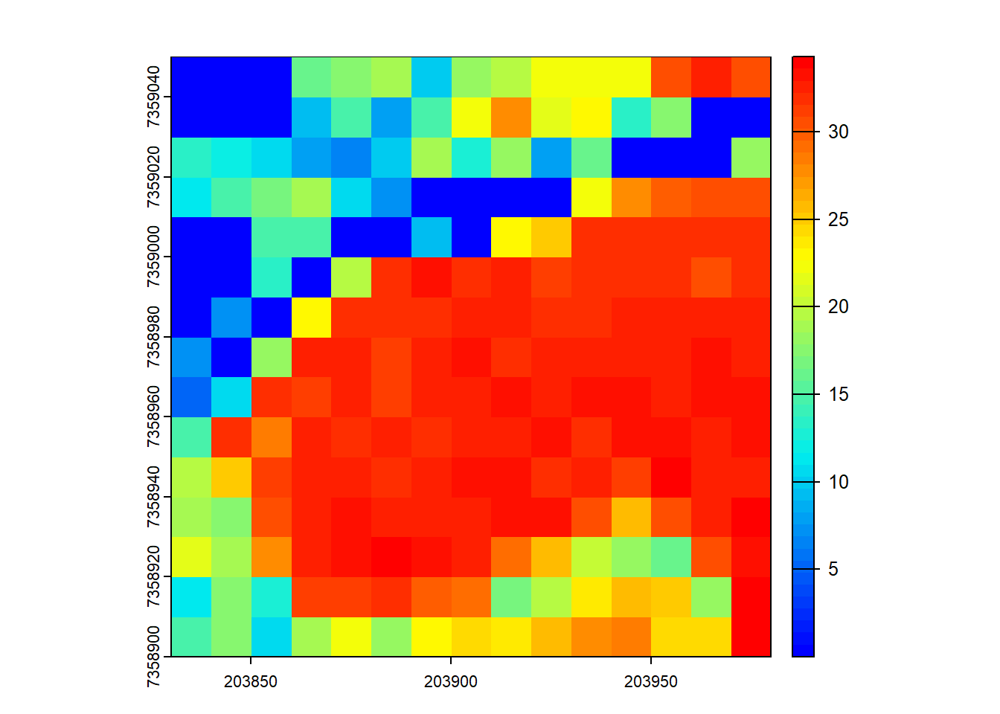
Code
pixel_metrics(las, ~as.list(quantile(Z), 10))
#> class : SpatRaster
#> dimensions : 8, 8, 5 (nrow, ncol, nlyr)
#> resolution : 20, 20 (x, y)
#> extent : 203820, 203980, 7358900, 7359060 (xmin, xmax, ymin, ymax)
#> coord. ref. : SIRGAS 2000 / UTM zone 23S (EPSG:31983)
#> source(s) : memory
#> names : 0%, 25%, 50%, 75%, 100%
#> min values : 0, 0.00, 0.00, 0.0, 0.79
#> max values : 0, 12.32, 17.19, 27.4, 34.46E2.
Map the density of ground returns at a 5 m resolution with pixel_metrics(filter = ~Classification == LASGROUND).
Code
GND <- pixel_metrics(las, ~length(Z)/25, res = 5, filter = ~Classification == LASGROUND)
plot(GND, col = heat.colors(50))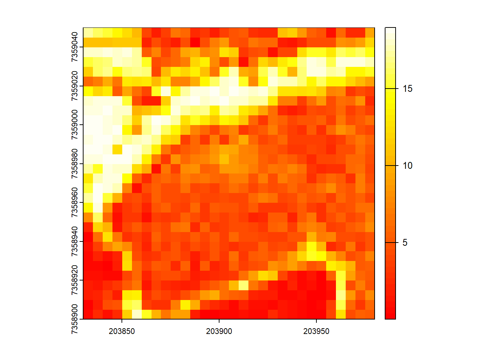
E3.
Map pixels that are flat (planar) using stdshapemetrics. These could indicate potential roads.
Code
m <- pixel_metrics(las, .stdshapemetrics, res = 3)
plot(m[["planarity"]], col = heat.colors(50))
Code
flat <- m[["planarity"]] > 0.85
plot(flat)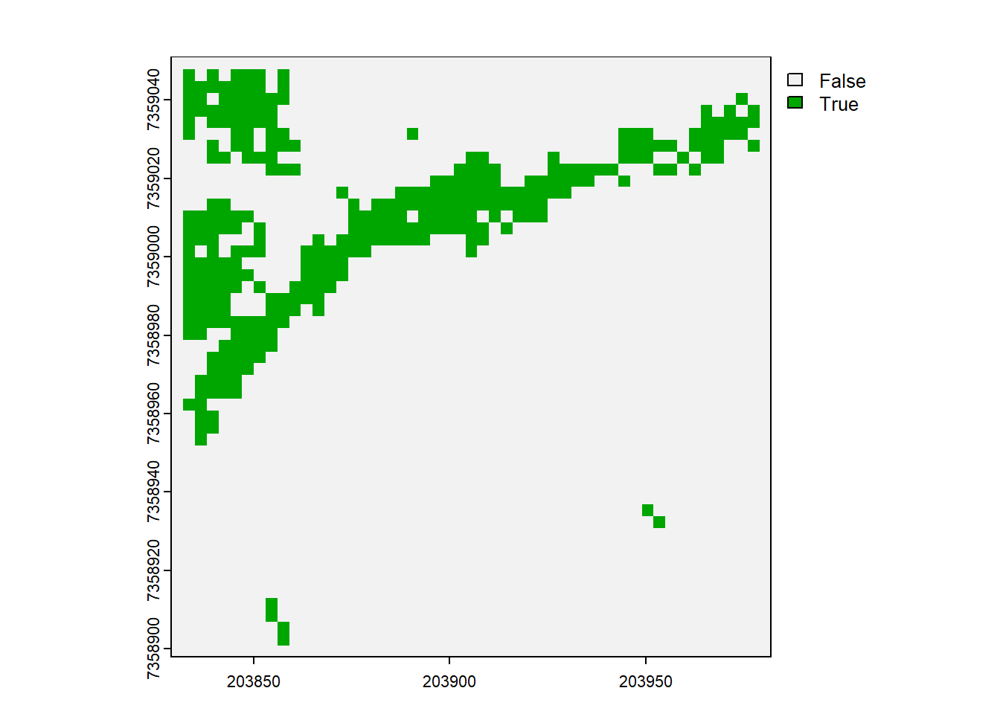
5-DTM
E1.
Plot and compare these two normalized point-clouds. Why do they look different? Fix that. Hint: filter.
Some non ground points are below 0. It can be slightly low noise point not classified as ground by the data provider. This low points not being numerous and dark blue we hardly see them
Code
las1 <- readLAS("data/MixedEucaNat.laz", filter = "-set_withheld_flag 0")
nlas1 <- normalize_height(las1, tin())
nlas2 <- readLAS("data/MixedEucaNat_normalized.laz", filter = "-set_withheld_flag 0")
plot(nlas1)
plot(nlas2)
nlas1 <- filter_poi(nlas1, Z > -0.1)
plot(nlas1)E2.
Clip a plot somewhere in MixedEucaNat.laz (the non-normalized file).
Code
circ <- clip_circle(las, 203930, 7359000, 25)
plot(circ)E3.
Compute a DTM for this plot. Which method are you choosing and why?
Code
dtm <- rasterize_terrain(circ, 0.5, kriging())
plot_dtm3d(dtm)E4.
Compute a DSM (digital surface model). Hint: Look back to how you made a CHM.
Code
dsm <- rasterize_canopy(circ, 1, p2r(0.1))
plot(dsm, col = height.colors(50))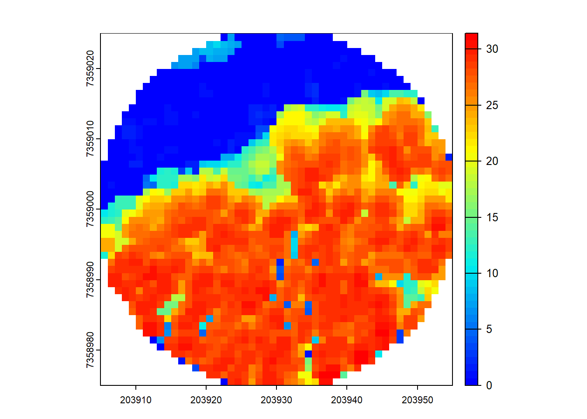
E5.
Normalize the plot.
Code
ncirc <- circ - dtm
plot(ncirc)E6.
Compute a CHM.
Code
chm <- rasterize_canopy(ncirc, 1, p2r(0.1))
plot(chm, col = height.colors(50))
E7.
Estimate some metrics of interest in this plot with cloud_metrics().
Code
metrics <- cloud_metrics(ncirc, .stdmetrics_z)
metrics
#> $zmax
#> [1] 31.41
#>
#> $zmean
#> [1] 11.11374
#>
#> $zsd
#> [1] 11.44308
#>
#> $zskew
#> [1] 0.4123246
#>
#> $zkurt
#> [1] 1.42725
#>
#> $zentropy
#> [1] NA
#>
#> $pzabovezmean
#> [1] 42.39526
#>
#> $pzabove2
#> [1] 60.61408
#>
#> $zq5
#> [1] 0
#>
#> $zq10
#> [1] 0
#>
#> $zq15
#> [1] 0
#>
#> $zq20
#> [1] 0
#>
#> $zq25
#> [1] 0
#>
#> $zq30
#> [1] 0
#>
#> $zq35
#> [1] 1.18
#>
#> $zq40
#> [1] 2.14
#>
#> $zq45
#> [1] 3.62
#>
#> $zq50
#> [1] 5.25
#>
#> $zq55
#> [1] 8.903
#>
#> $zq60
#> [1] 13.12
#>
#> $zq65
#> [1] 18.32
#>
#> $zq70
#> [1] 22.1
#>
#> $zq75
#> [1] 24.31
#>
#> $zq80
#> [1] 25.62
#>
#> $zq85
#> [1] 26.7
#>
#> $zq90
#> [1] 27.53
#>
#> $zq95
#> [1] 28.39
#>
#> $zpcum1
#> [1] 18.12365
#>
#> $zpcum2
#> [1] 30.03214
#>
#> $zpcum3
#> [1] 35.78736
#>
#> $zpcum4
#> [1] 41.12687
#>
#> $zpcum5
#> [1] 45.38727
#>
#> $zpcum6
#> [1] 49.90123
#>
#> $zpcum7
#> [1] 56.24318
#>
#> $zpcum8
#> [1] 68.07501
#>
#> $zpcum9
#> [1] 91.750456-ITS
Using:
las <- readLAS(files = "data/MixedEucaNat_normalized.laz", filter = "-set_withheld_flag 0")
col1 <- height.colors(50)E1.
Find and count the trees.
Code
ttops <- locate_trees(las = las, algorithm = lmf(ws = 3, hmin = 5))
x <- plot(las)
add_treetops3d(x = x, ttops = ttops)E2.
Compute and map the density of trees with a 10 m resolution.
Code
r <- terra::rast(x = ttops)
terra::res(r) <- 10
r <- terra::rasterize(x = ttops, y = r, "treeID", fun = 'count')
plot(r, col = viridis::viridis(20))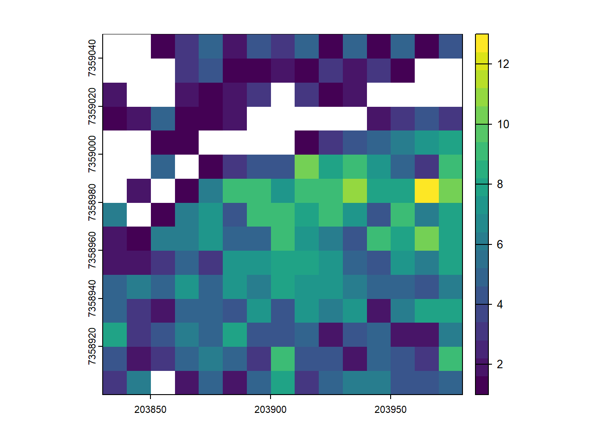
E3.
Segment the trees.
Code
chm <- rasterize_canopy(las = las, res = 0.5, algorithm = p2r(subcircle = 0.15))
plot(chm, col = col1)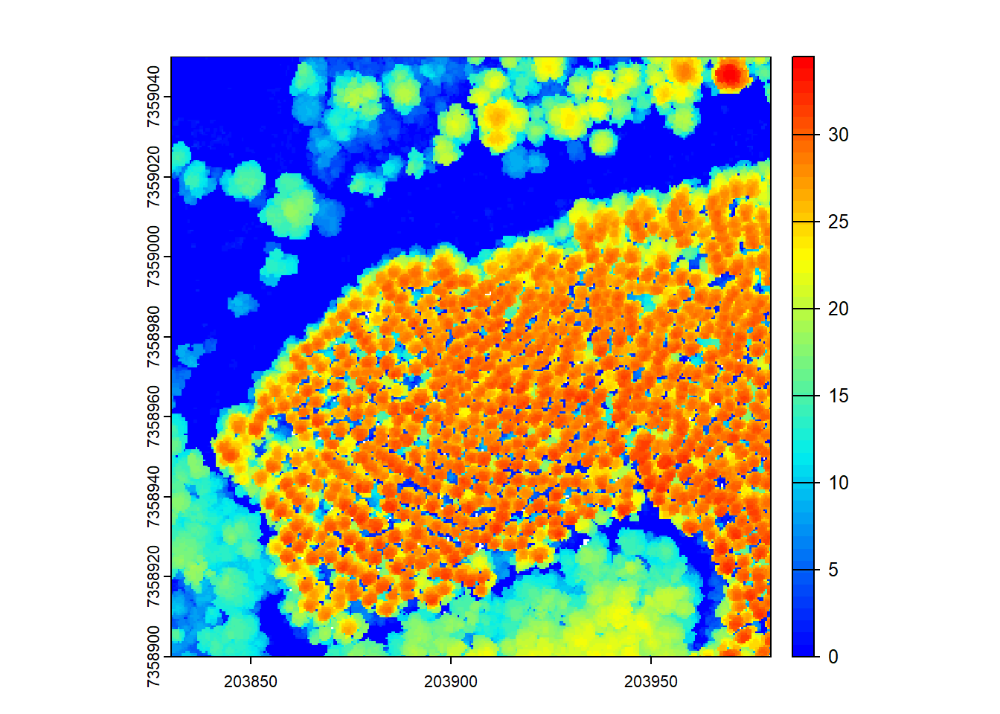
Code
ttops <- locate_trees(las = chm, algorithm = lmf(ws = 2.5))
las <- segment_trees(las = las, dalponte2016(chm = chm, treetops = ttops))
plot(las, color = "treeID")E4.
Assuming that a value of interest of a tree can be estimated using the crown area and the mean Z of the points with the formula 2.5 * area + 3 * mean Z. Estimate the value of interest of each tree.
Code
value_of_interest <- function(x,y,z)
{
m <- stdtreemetrics(x,y,z)
avgz <- mean(z)
v <- 2.5*m$convhull_area + 3 * avgz
return(list(V = v))
}
V <- crown_metrics(las = las, func = ~value_of_interest(X,Y,Z))
plot(x = V["V"])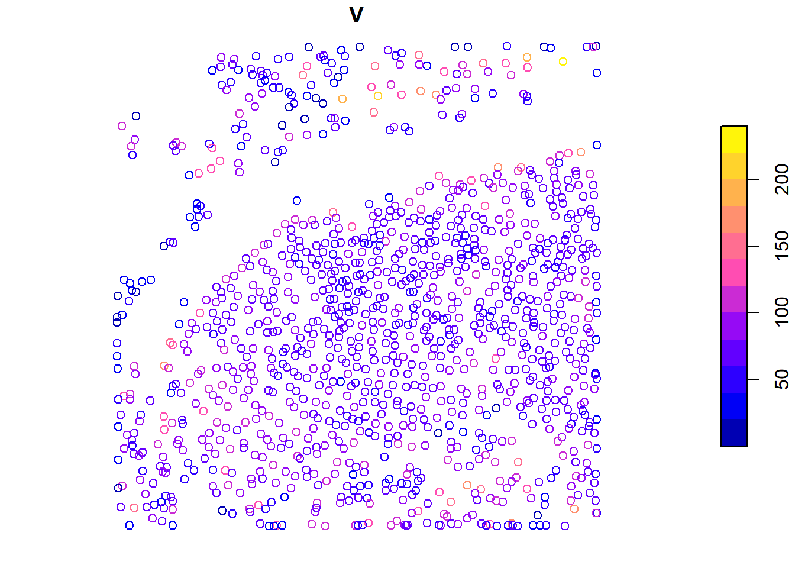
E5.
Map the total biomass at a resolution of 10 m. The output is a mixed of ABA and ITS
Code
Vtot <- rasterize(V, r, "V", fun = "sum")
plot(Vtot, col = viridis::viridis(20))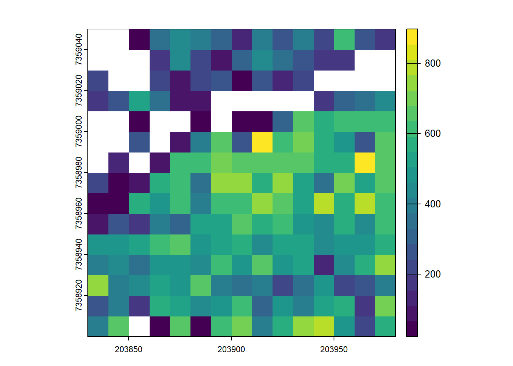
7-LASCTALOG
This exercise is complex because it involves options not yet described. Be sure to use the lidRbook and package documentation.
Using:
ctg <- readLAScatalog(folder = "data/Farm_A/")E1.
Generate a raster of point density for the provided catalog. Hint: Look through the documentation for a function that will do this!
Code
ctg <- readLAScatalog("data/Farm_A/", filter = "-drop_withheld -drop_z_below 0 -drop_z_above 40")
D1 <- rasterize_density(las = ctg, res = 4)
#> Chunk 1 of 25 (4%): state ✓
#> Chunk 2 of 25 (8%): state ✓
#> Chunk 3 of 25 (12%): state ✓
#> Chunk 4 of 25 (16%): state ✓
#> Chunk 5 of 25 (20%): state ✓
#> Chunk 6 of 25 (24%): state ✓
#> Chunk 7 of 25 (28%): state ✓
#> Chunk 8 of 25 (32%): state ✓
#> Chunk 9 of 25 (36%): state ✓
#> Chunk 10 of 25 (40%): state ✓
#> Chunk 11 of 25 (44%): state ✓
#> Chunk 12 of 25 (48%): state ✓
#> Chunk 13 of 25 (52%): state ✓
#> Chunk 14 of 25 (56%): state ✓
#> Chunk 15 of 25 (60%): state ✓
#> Chunk 16 of 25 (64%): state ✓
#> Chunk 17 of 25 (68%): state ✓
#> Chunk 18 of 25 (72%): state ✓
#> Chunk 19 of 25 (76%): state ✓
#> Chunk 20 of 25 (80%): state ✓
#> Chunk 21 of 25 (84%): state ✓
#> Chunk 22 of 25 (88%): state ✓
#> Chunk 23 of 25 (92%): state ✓
#> Chunk 24 of 25 (96%): state ✓
#> Chunk 25 of 25 (100%): state ✓
plot(D1, col = heat.colors(50))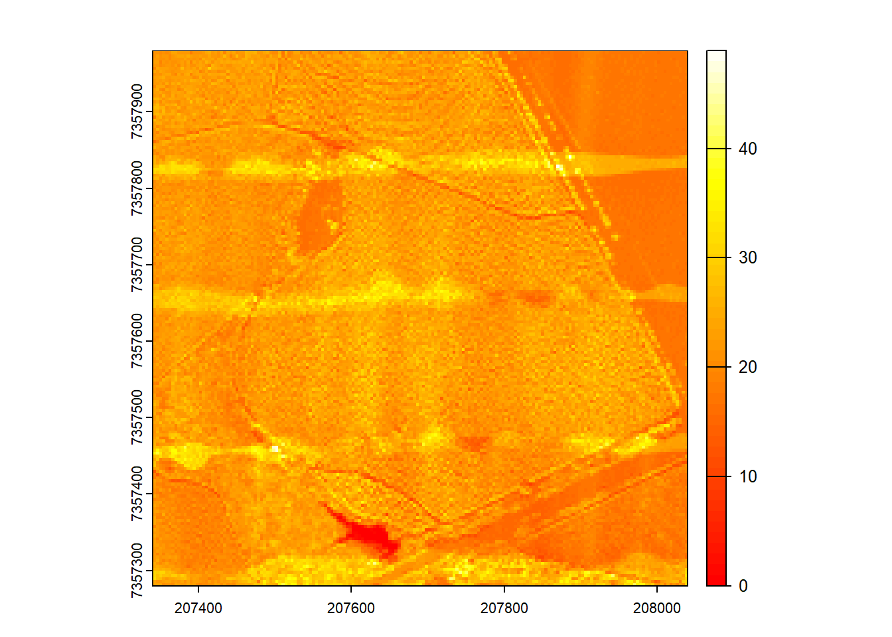
E2.
Modify the catalog to have a point density of 10 pts/m2 using the decimate_points() function. If you get an error make sure to read the documentation for decimate_points() and try: using opt_output_file() to write files to a temporary directory.
Code
newctg <- decimate_points(las = ctg, algorithm = homogenize(density = 10, res = 5))
#> Error: This function requires that the LAScatalog provides an output file template.Code
opt_filter(ctg) <- "-drop_withheld"
opt_output_files(ctg) <- paste0(tempdir(), "/{ORIGINALFILENAME}")
newctg <- decimate_points(las = ctg, algorithm = homogenize(density = 10, res = 5))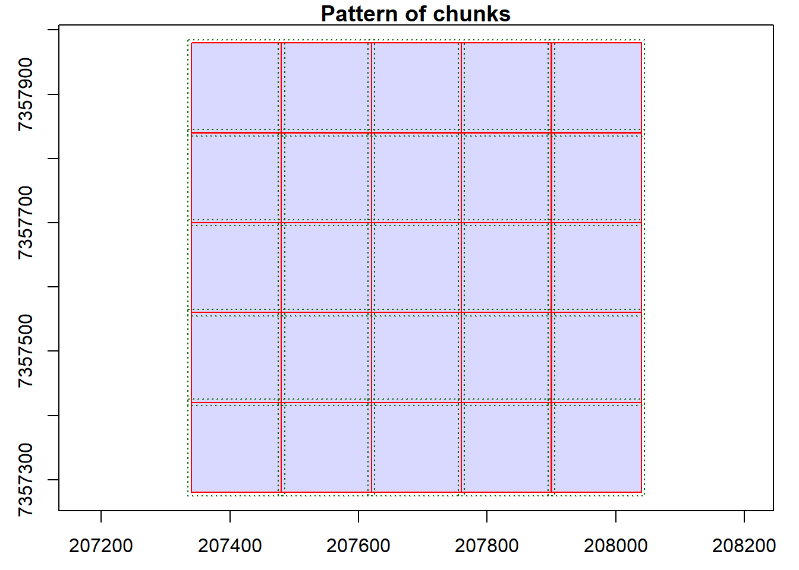
#> Chunk 1 of 25 (4%): state ✓
#> Chunk 2 of 25 (8%): state ✓
#> Chunk 3 of 25 (12%): state ✓
#> Chunk 4 of 25 (16%): state ✓
#> Chunk 5 of 25 (20%): state ✓
#> Chunk 6 of 25 (24%): state ✓
#> Chunk 7 of 25 (28%): state ✓
#> Chunk 8 of 25 (32%): state ✓
#> Chunk 9 of 25 (36%): state ✓
#> Chunk 10 of 25 (40%): state ✓
#> Chunk 11 of 25 (44%): state ✓
#> Chunk 12 of 25 (48%): state ✓
#> Chunk 13 of 25 (52%): state ✓
#> Chunk 14 of 25 (56%): state ✓
#> Chunk 15 of 25 (60%): state ✓
#> Chunk 16 of 25 (64%): state ✓
#> Chunk 17 of 25 (68%): state ✓
#> Chunk 18 of 25 (72%): state ✓
#> Chunk 19 of 25 (76%): state ✓
#> Chunk 20 of 25 (80%): state ✓
#> Chunk 21 of 25 (84%): state ✓
#> Chunk 22 of 25 (88%): state ✓
#> Chunk 23 of 25 (92%): state ✓
#> Chunk 24 of 25 (96%): state ✓
#> Chunk 25 of 25 (100%): state ✓E3.
Generate a raster of point density for this new decimated dataset.
Code
opt_output_files(newctg) <- ""
D2 <- rasterize_density(las = newctg, res = 4)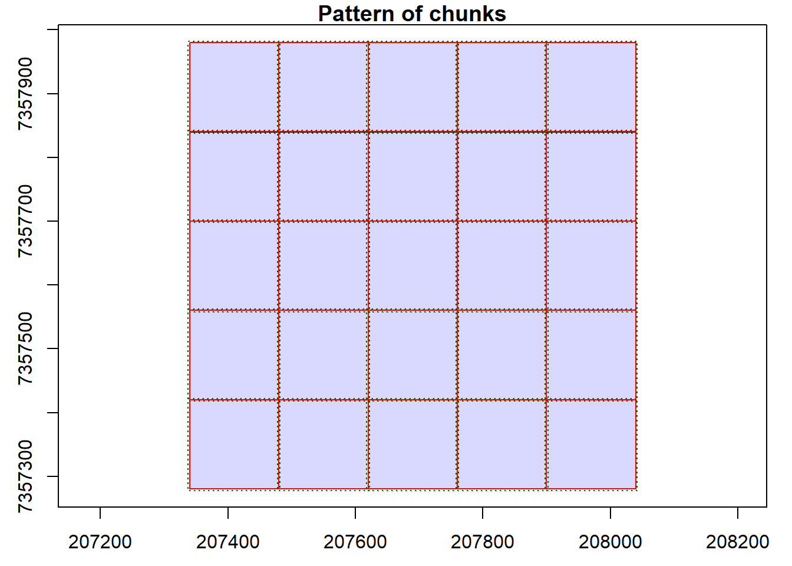
#> Chunk 1 of 25 (4%): state ✓
#> Chunk 2 of 25 (8%): state ✓
#> Chunk 3 of 25 (12%): state ✓
#> Chunk 4 of 25 (16%): state ✓
#> Chunk 5 of 25 (20%): state ✓
#> Chunk 6 of 25 (24%): state ✓
#> Chunk 7 of 25 (28%): state ✓
#> Chunk 8 of 25 (32%): state ✓
#> Chunk 9 of 25 (36%): state ✓
#> Chunk 10 of 25 (40%): state ✓
#> Chunk 11 of 25 (44%): state ✓
#> Chunk 12 of 25 (48%): state ✓
#> Chunk 13 of 25 (52%): state ✓
#> Chunk 14 of 25 (56%): state ✓
#> Chunk 15 of 25 (60%): state ✓
#> Chunk 16 of 25 (64%): state ✓
#> Chunk 17 of 25 (68%): state ✓
#> Chunk 18 of 25 (72%): state ✓
#> Chunk 19 of 25 (76%): state ✓
#> Chunk 20 of 25 (80%): state ✓
#> Chunk 21 of 25 (84%): state ✓
#> Chunk 22 of 25 (88%): state ✓
#> Chunk 23 of 25 (92%): state ✓
#> Chunk 24 of 25 (96%): state ✓
#> Chunk 25 of 25 (100%): state ✓
plot(D2, col = heat.colors(50))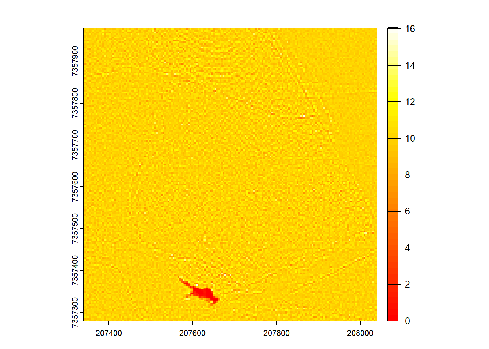
E4.
Read the whole decimated catalog as a single las file. The catalog isn’t very big - not recommended for larger data sets!
Code
las <- readLAS(newctg)
plot(las)E5.
Read documentation for the catalog_retile() function and merge the dataset into larger tiles. Use ctg metadata to align new chunks to the lower left corner of the old ones. Hint: Visualize the chunks and use opt_chunk_* options.
Code
opt_chunk_size(ctg) <- 280
opt_chunk_buffer(ctg) <- 0
opt_chunk_alignment(ctg) <- c(min(ctg$Min.X), min(ctg$Min.Y))
plot(ctg, chunk = T)
opt_output_files(ctg) <- "{tempdir()}/PRJ_A_{XLEFT}_{YBOTTOM}"
newctg <- catalog_retile(ctg = ctg)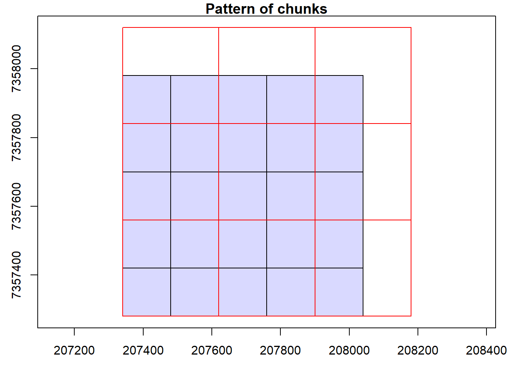
#> Chunk 1 of 9 (11.1%): state ✓
#> Chunk 2 of 9 (22.2%): state ✓
#> Chunk 3 of 9 (33.3%): state ✓
#> Chunk 4 of 9 (44.4%): state ✓
#> Chunk 5 of 9 (55.6%): state ✓
#> Chunk 6 of 9 (66.7%): state ✓
#> Chunk 7 of 9 (77.8%): state ✓
#> Chunk 8 of 9 (88.9%): state ✓
#> Chunk 9 of 9 (100%): state ✓
plot(newctg)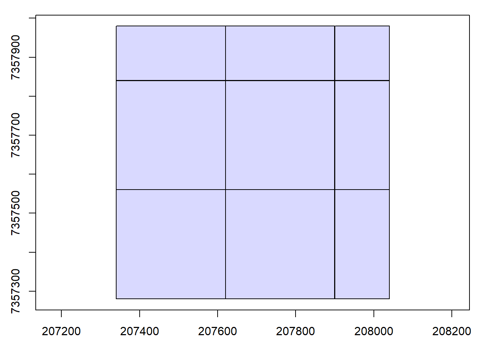
8-ENGINE
E1.
The following is a simple (and a bit naive) function to remove high noise points. - Explain what this function does - Create a user-defined function to apply using catalog_map() - Hint: Dont forget about buffered points… remember lidR::filter_* functions.
Code
filter_noise <- function(las, sensitivity)
{
p95 <- pixel_metrics(las, ~quantile(Z, probs = 0.95), 10)
las <- merge_spatial(las, p95, "p95")
las <- filter_poi(las, Z < 1+p95*sensitivity, Z > -0.5)
las$p95 <- NULL
return(las)
}
filter_noise_collection = function(las, sensitivity)
{
las <- filter_noise(las, sensitivity)
las <- filter_poi(las, buffer == 0L)
return(las)
}
ctg = readLAScatalog("data/Farm_A/")
opt_select(ctg) <- "*"
opt_filter(ctg) <- "-drop_withheld"
opt_output_files(ctg) <- "{tempdir()}/*"
opt_chunk_buffer(ctg) <- 20
opt_chunk_size(ctg) <- 0
output <- catalog_map(ctg, filter_noise_collection, sensitivity = 1.2)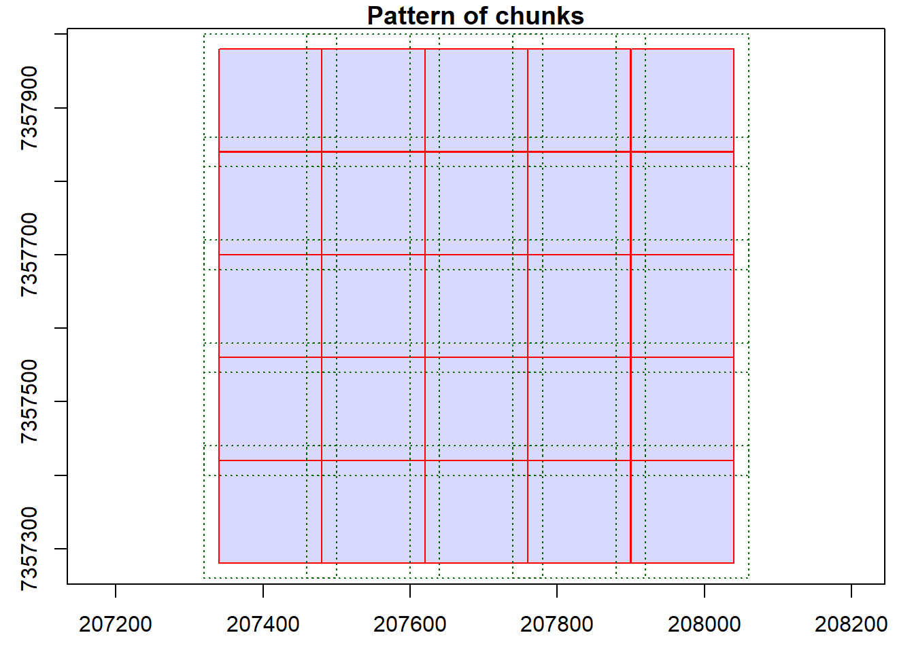
#> Chunk 1 of 25 (4%): state ✓
#> Chunk 2 of 25 (8%): state ✓
#> Chunk 3 of 25 (12%): state ✓
#> Chunk 4 of 25 (16%): state ✓
#> Chunk 5 of 25 (20%): state ✓
#> Chunk 6 of 25 (24%): state ✓
#> Chunk 7 of 25 (28%): state ✓
#> Chunk 8 of 25 (32%): state ✓
#> Chunk 9 of 25 (36%): state ✓
#> Chunk 10 of 25 (40%): state ✓
#> Chunk 11 of 25 (44%): state ✓
#> Chunk 12 of 25 (48%): state ✓
#> Chunk 13 of 25 (52%): state ✓
#> Chunk 14 of 25 (56%): state ✓
#> Chunk 15 of 25 (60%): state ✓
#> Chunk 16 of 25 (64%): state ✓
#> Chunk 17 of 25 (68%): state ✓
#> Chunk 18 of 25 (72%): state ✓
#> Chunk 19 of 25 (76%): state ✓
#> Chunk 20 of 25 (80%): state ✓
#> Chunk 21 of 25 (84%): state ✓
#> Chunk 22 of 25 (88%): state ✓
#> Chunk 23 of 25 (92%): state ✓
#> Chunk 24 of 25 (96%): state ✓
#> Chunk 25 of 25 (100%): state ✓
las <- readLAS(output)
plot(las)